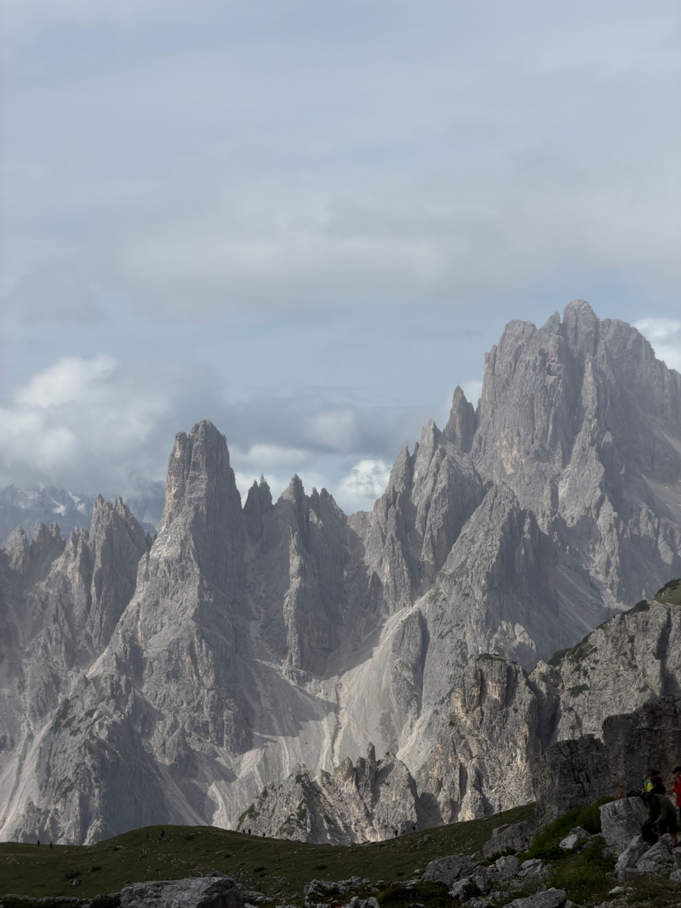
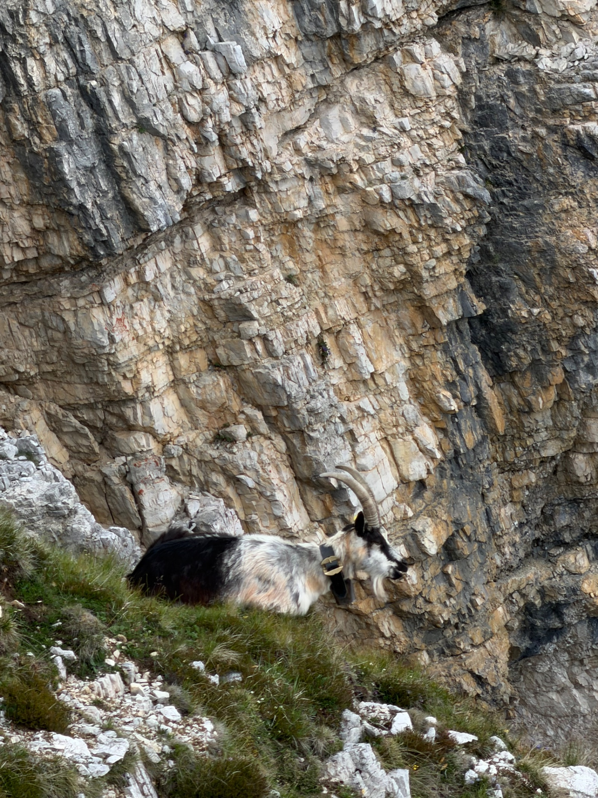
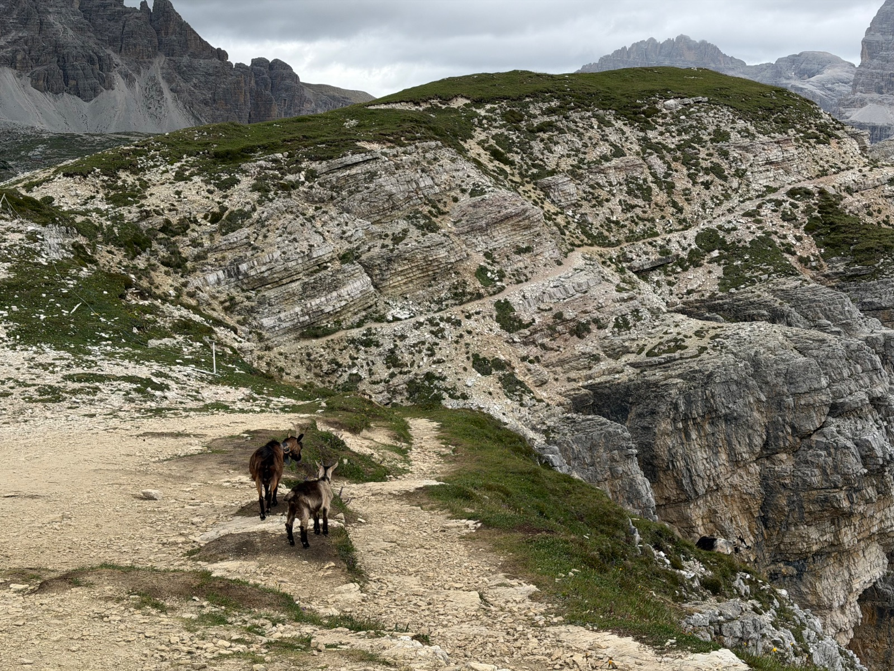

← 回文章列表
旅遊
多洛米蒂 Day 2｜三尖峰大環線 Tre Cime di Lavaredo 、魔戒尖塔與 Dobbiaco 湖
第二天，我們搭上大約一週前在臺灣預約好的 444 號公車前往三尖峰。三尖峰的交通可以從 Dobbiaco 出發，也可以從 Cortina 或 Misurina 出發。從 Dobbiaco 出發還是最順的，直接搭一班預約好的公車即可，而且因為是預定的，所以會有位置可以坐。如果從 Cortina 出發，那就得先搭 445 號地區公車到 Dobbiaco 換 444 號公車，或者是去 Misurina 湖再換接駁車。三尖峰與 Misurina 湖之間的接駁巴士一天 10 歐元可以無限搭乘，不過缺點就是總是有非常多的排隊人潮。總結來說，還是最推薦和我們一樣從 Dobbiaco 出發。Dobbiaco 是一個前往三尖峰與布萊埃斯湖都很棒的小鎮。
就在眼前的 Cadini di Misurina 魔戒尖塔與路上的山羊一家
444 號公車的下車處就是 Rifugio Auronzo（奧倫佐山屋）。山屋往左接著就是 101 號步道的三尖峰大環線，逆時針繞三尖峰一圈，沿途會經過三個主要山屋；或是山屋往右走則是 117 號步道去看魔戒尖塔 (Cadini di Misurina)。我們在山屋先吃了民宿幫我們準備的早餐盒之後，就出發走 117 號步道一圈，沿路還遇到山羊一家，大約花費一個半小時，再回到 Rifugio Auronzo，接著去 101 號步道走三尖峰大環線。這時候大約九點多遊客已經很多了，也有很多小狗也來爬山，但空間很空曠，所以不會擁擠，整體還是很舒服。



大環線沿途有三座山屋。從南面的公車站與 Rifugio Auronzo 逆時針方向出發之後，第一個是東面的 Rifugio Lavaredo，第二個是北面的 Rifugio Locatelli，第三個是西面的 Rifugio Langalm。
走到第一間山屋（Rifugio Lavaredo）的路大致都非常好走，相當平緩，不過因為是在三尖峰的背面與側面，所以看不到最經典的三尖峰畫面。接著要去第二間山屋（Rifugio Locatelli）需要先上一個坡，上完坡就抵達三尖峰最震撼的位置了！如果沒有要走大環線，可以考慮在這邊拍完照就準備回頭，或者是像我們一樣，繼續往前走去第二間山屋 Rifugio Locatelli 吃午餐。Rifugio Locatelli 的地理位置非常好，吃飯的時候就是正對著三尖峰。三尖峰的經典畫面——從山洞拍攝出去的位置——就在山屋的後方，附近還有兩個漂亮的湖泊，也可以自己準備午餐來這裡野餐，非常愜意舒服。
吃完午餐後可以考慮原路折返，沿路順時針折返回去搭公車處；或者是繼續逆時針接上 102 號再接 105 號步道前往第三個山屋（Rifugio Langalm）。這段路的景色和剛才截然不同，從原本的巨石與岩石路段，變成是草原路段，也非常漂亮喔！但是需要先下切山谷再往上爬，所以會消耗比原路折返還要來得多的體力。不過沿途的景色非常值得，可以在不同的角度欣賞三尖峰。但也因為有積雪與雨水的沖刷，所以在三尖峰的西面有一些像土石流一般的小碎石特殊地貌。
回到公車站與停車場（Rifugio Auronzo）之後，我們提早在 Lago di Dobbiaco（多比亞科湖）公車站下車，這裡已經非常接近 Dobbiaco 城鎮了。在 Lago di Dobbiaco 走了半圈環湖步道，之後再搭 445 號公車回鎮上。445 號公車不需要像 444 號一樣事先預約。目前南提洛地區的 Südtirolmobil Guest Pass 有包含當地的公車，唯獨不包含去三尖峰的 444 號與去布萊埃斯湖的 442 號公車（這兩條線在旺季需額外預約付費）。
在 Lago di Dobbiaco 看到許多可愛的天鵝與鴨子，這裡也可以划船，但遊客比熱門景點少非常多。